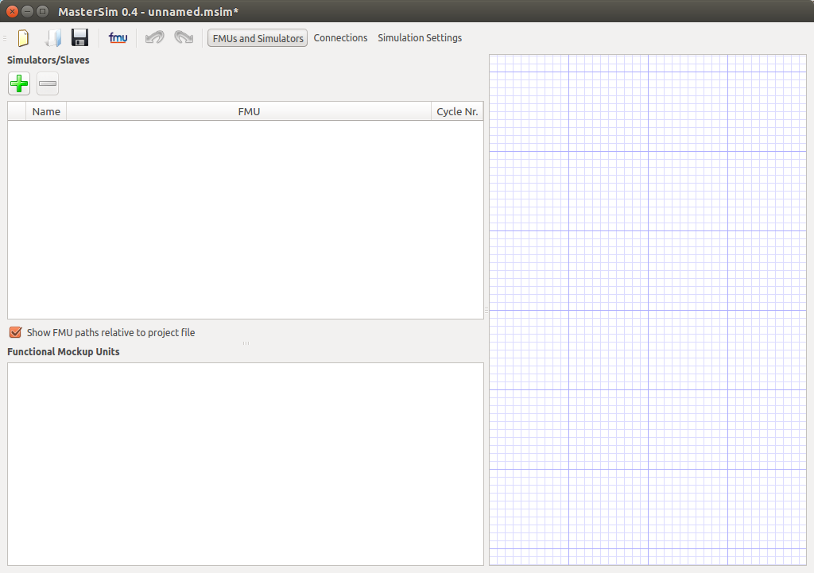
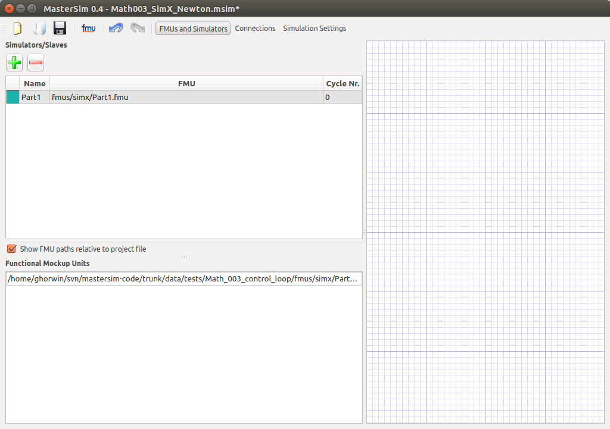
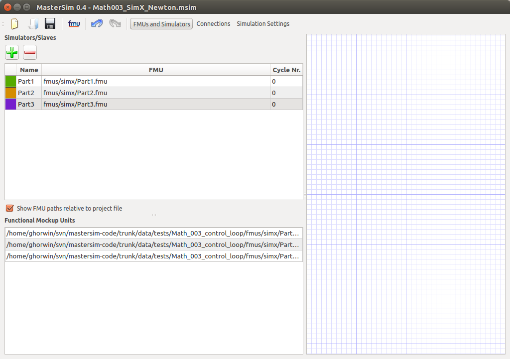
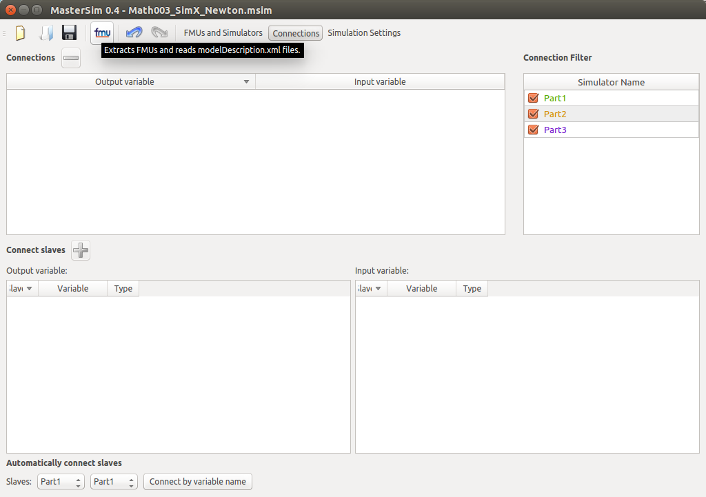
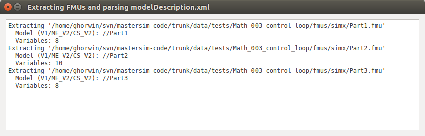
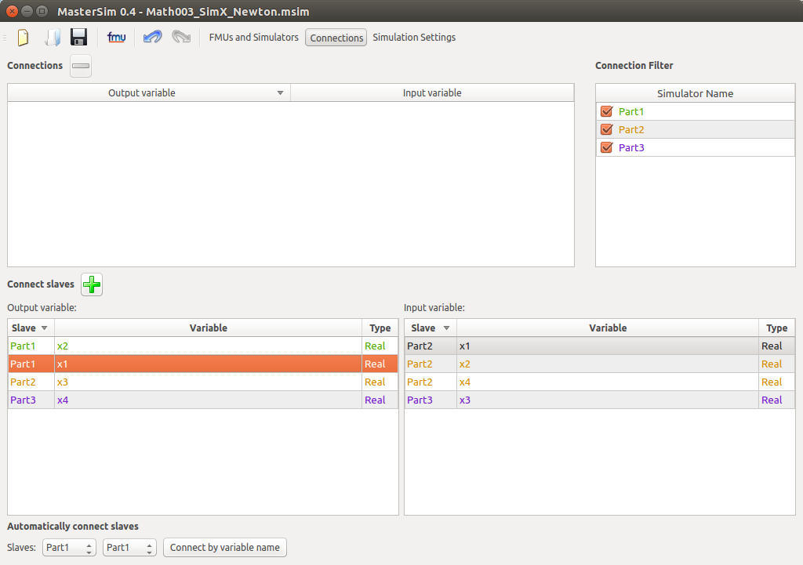
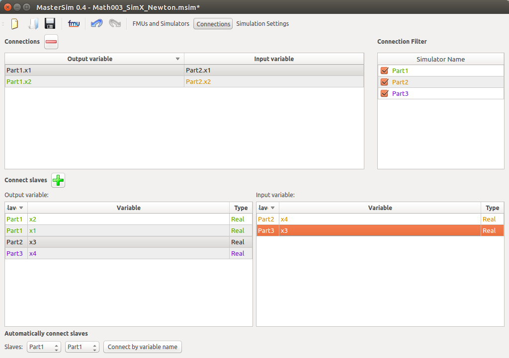
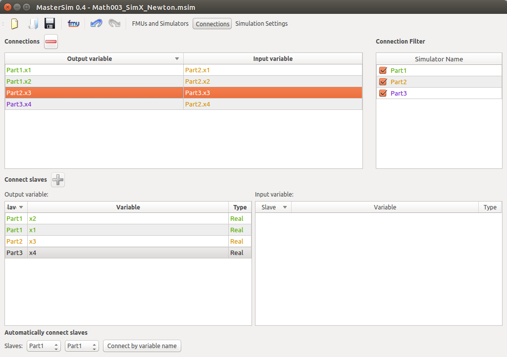
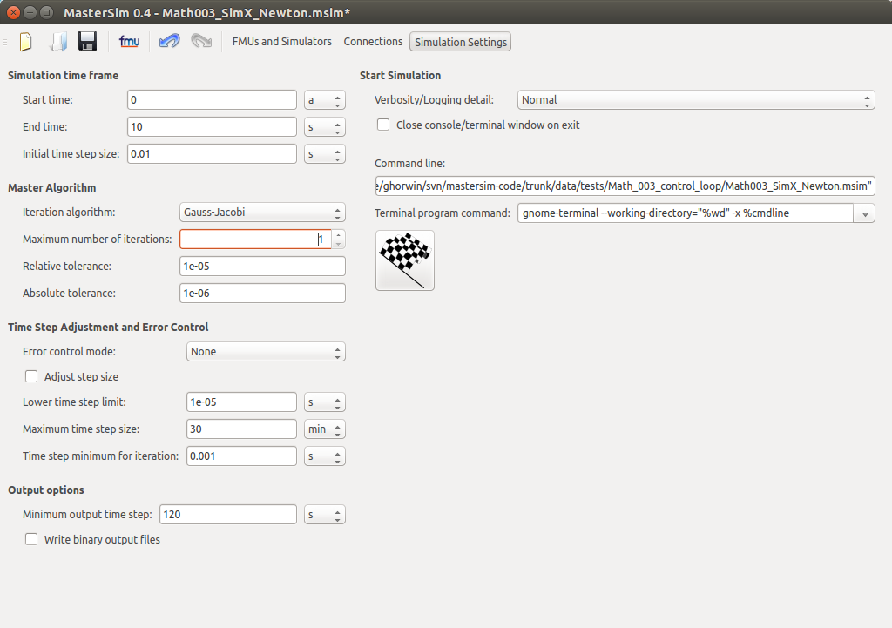

DocumentationFeature descriptionScripting possibilitiesMasterSim can be used from scripts, for example when variation studies are done. For that purpose, project files are plain-text and can created/edited with scripts easily. The actual simulator is provided as command line executable MasterSimulator, which can be called from scripts. Assisting FMU DevelopmentMasterSim can be configured via command line arguments to extract FMUs automatically, or use already extracted FMUs. This allows external debuggers to compile their shared libraries/DLLs in debug mode and let MasterSim dynamically load these DLLs, instead of those packaged in the FMU. Also, you can directly fix errors in the modelDescription file without unpacking/repacking the FMU archive. Simulation Scenarios with several FMU instancesMasterSim supports multiple instances of the same FMU within one simulation scenario. In order to avoid FMU instances overwriting each others results, a directory structure layout is defined and FMU-specific base paths are communicated to each FMU slave. This allows batch processing/parallel execution of several simulation scenarios (runs of MasterSimulator) where the same FMU is instantiated many times. All the other nice features...... are documented in the [WIKI-pages]. API documentationThe most up-to-date documentation can be generated from the SVN sources using the [Doxygen] tool. See doc directory in source code. Bugs, feature wishes, thanks and complainsThe sourceforge project also hosts a bug/request [tracker] where you can report bugs and problems or describe features that you might miss. |
Tutorials
Getting Started Tutorial of the MasterSim User InterfaceThis tutorial illustrates usage of the MasterSimulator user interface to setup a co-simulation scenario. First step is to create a new project. From the welcome page choose Create project... or from the file menu New....  Defining Simulators/Importing FMUsOnce the project has been created it should be saved to some location. For this tutorial simply use the directory from the examples with the Math003 files and create a new project file inside this directory. Now add simulators by selecting FMU files. The slave name is automatically generated from the FMU file name, but can be later edited in the table.  You may even add an FMU file several times, in which case the FMU is instantiated once for each slave.  Once all FMUs have been imported, the connections between the slaves can be made. Before setting connections you may want to set the cycle index for each FMU. FMUs with the same cycle index are solved iteratively, if an iteration method is selected. Analyzing FMUs
Note: This step is important for the input/output variable tables to
be filled. Click on "Analyze FMUs" to parse model description.  A window will show basic information (to be extended in future) about all analyzed FMUs.  Now all input and output variables appear in the "create connection" tables.  Connecting Simulation SlavesTo connect slaves select input and corresponding output in both tables. You can double-click on a variable to create a connection or use the + button.  Slave inputs that are connected disappear from the list of available inputs.  Once all connections are made, the input variable table should be empty. However, you can always choose to leave some variables unconnected, in which case only the start/default value will be set at these inputs. Specifying Simulation ParametersFinally, you need to set the master algorithm parameters and start the simulation (with the racing flag button).  Post-Processing TutorialSimulation output files are stored by the FMUs themselves (see documentation of directory structure) and the master. MasterSim stores all output variables from all FMUs (unless filtered out, see doc) grouped according to type and scientific unit in DataIO file format (see [file format specs]). You can use the IBK/TU Dresden [PostProcessing tool] for detailed analysis (see documentation on PostProc webpage for details). Alternatively, you can extract columns/data sets from the data files with the command line tool and generate CSV files (for use in spreadsheet calculation tools or other postprocessing software). |